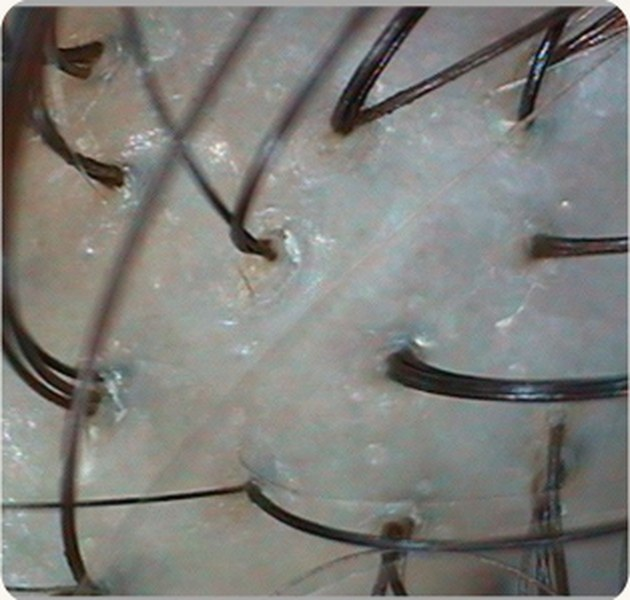
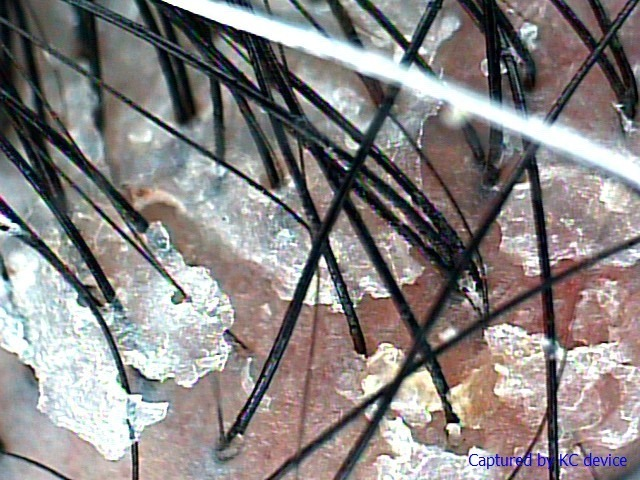
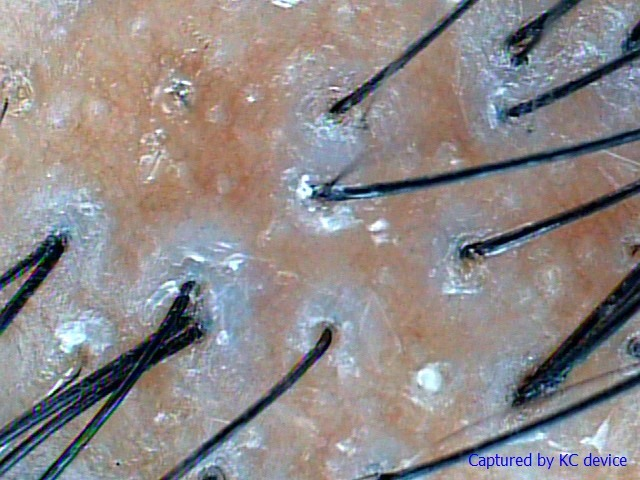
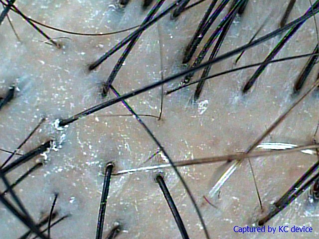
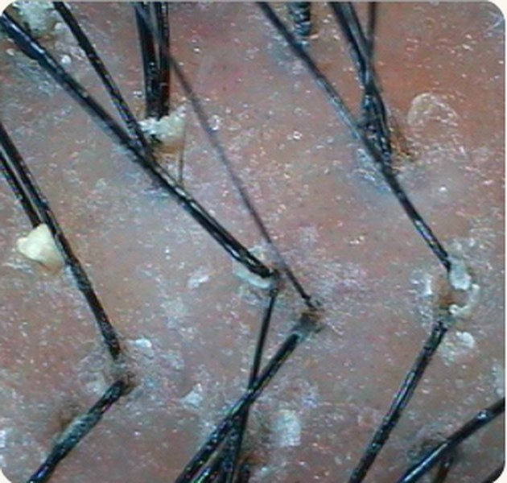

등록 사진은 브라우저 메모리에서만 사용합니다.
고객 차트 / 두피 진단
두피 진단
데모 환자D-2026-001 · 합성 데이터
VER.2.1 LOCAL PROTOTYPE
사진에서 상담까지,
사진에서 상담까지,
한 화면에서 연결합니다.
최대 6장의 두피 사진을 등록하고 5개 환자 단계, 세부 상태, 의료진 확정, 상담 인계까지 확인합니다.
01사진 등록
02단계·세부 상태 제안
03의료진 확정
2·2+·3·3+·4 중 하나로 제안합니다.
민감성·각질·유분을 사진과 함께 설명합니다.
STEP 1 · 사진 등록
환자 두피 사진을 등록해주세요
여러 각도에서 촬영한 사진을 최대 6장까지 등록할 수 있습니다.
0/ 6장
사진을 1장 이상 등록하면 분석을 시작할 수 있습니다.
STEP 2 · 데모 분석
진단 결과 화면을 준비하고 있습니다
실제 의료 AI가 아닌 로컬 데모 규칙으로 단계와 세부 상태를 생성합니다.
사진 불러오기
단계·세부 상태 생성
결과 화면 구성
STEP 3 · 진단 결과
두피 진단 결과
데모 판정입니다. 이미지 내용을 실제로 판독하지 않습니다. 단계·수치·치료안은 의료진 검토 후 상담에 사용하세요.
A · 현재 결과
환자 사진
대표 촬영 이미지
데모 제안 · 미확정-
현재 제안 단계3+단계Moderate+
분석 버전LOCAL-DEMO 2.1
의료진 검토
환자 결과 단계를 확인해주세요
확정 전 결과는 최종 진단으로 상담 인계할 수 없습니다.
SCALP STAGE REFERENCE
0~4+ 전체 단계 기준
B · 세부 상태
민감성·각질·유분 상태
낮은 수치일수록 심각한 상태를 의미합니다.
세부 점수는 로컬 목업용 데모 값입니다. 환자 종합 점수는 표시하지 않습니다.
C · 악화 흐름
치료하지 않을 경우의 단계 변화
현재 상태와 다음 단계, 4+단계 예시를 비교합니다.
안내2–4개월은 기획상 상담 안내값이며 개인별 진행을 보장하지 않습니다. 환자 노출 전 의료진 검수가 필요합니다.
D · 건강 비교
건강한 두피 VS 4+단계 두피
모발 굵기와 모근당 모발 수를 예시 이미지로 비교합니다.

건강한 두피 환경
모발 굵기0.5mm
모근당 모발3개
과도한 붉음과 두꺼운 각질이 없고 모발이 비교적 굵고 고르게 관찰되는 예시입니다.

악화된 두피 환경
모발 굵기0.1mm
모근당 모발1개
붉음·두꺼운 각질·유분성 부착물이 모공 주변에 쌓이고 모발이 가늘고 성기게 관찰되는 예시입니다.
예시 수치0.5mm/0.1mm와 모근당 3개/1개는 의료진 승인 전 확정 수치로 사용하지 않습니다.
E · 권고 치료
현재 단계의 권고 치료안
AI 생성 문구가 아닌 단계별 규칙표의 데모 값입니다.
프리컨디셔닝 + 아르케
25–30회현재 단계 기준의 필수 권고 회차입니다.
보톡스 + 엑소좀
환자 상태와 적응 여부를 의료진이 확인한 뒤 확정합니다.
F · 유사 사례
유사 치료 사례 A/B
실제 운영 전 동의받은 동일 환자 전후 사례로 교체해야 합니다.
CASE A표준 관리 경로 예시


- 치료 구성
- 실제 사례 입력 필요
- 기간·횟수
- 실제 사례 입력 필요
CASE B복합 관리 경로 예시

- 치료 구성
- 실제 사례 입력 필요
- 기간·횟수
- 실제 사례 입력 필요
주의 위 사진은 단계 참고 이미지를 조합한 UI 시뮬레이션이며 동일 환자의 치료 전후 결과가 아닙니다.